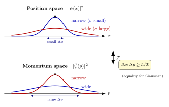

不确定性原理的数学根 — $\Delta x \Delta p \ge \hbar/2$ 凭什么?
1927 年 3 月, Heisenberg 在哥本哈根宿舍里写下著名的 γ-ray microscope 论证: 想看清电子位置, 需要用短波长光; 短波长意味着大动量光子; 光子撞电子, 电子动量被扰动 — 所以越想看清位置, 越测不准动量. 这个论证有直觉上的力量, 但作为推导是不严谨的: 它假装"测量"在物理上是某种独立机制, 而实际上, 不确定性早在你测量之前就刻在波函数本身的几何里.
同年, Earle Kennard 给高斯波包做了第一个严格证明; 1929 年 Howard Robertson 把它推广到任意两个自伴算符 — 此时人们才看清: 不确定性根本不需要"测量"二字, 它是 Hilbert 空间内积的纯数学事实, 由 Cauchy-Schwarz 不等式 (一道在欧几里得 $\mathbb R^3$ 里就成立的几何不等式) 直接推出.
本节我们就从这个角度走一遍. 你会看到, $\hbar/2$ 这个看似神秘的数字, 其实是"算符之间的不对易程度" $\langle [\hat A, \hat B]\rangle$ 在 Cauchy-Schwarz 下界处的剩余项 — 干净, 几何, 没有任何"哲学".
一、方差作为算符的内积长度
设 Hilbert 空间为 $\mathcal H$, 状态 $|\psi\rangle \in \mathcal H$ 已归一: $\langle\psi|\psi\rangle = 1$. 对一个自伴算符 $\hat A = \hat A^\dagger$, 期望值是 $\langle A\rangle := \langle\psi|\hat A|\psi\rangle$, 它是实数 (自伴算符的期望值实, 见第 22 节《自伴算符》). 我们把"涨落"算符记作 $\hat A' := \hat A - \langle A\rangle \cdot \mathbf 1$, 仍然自伴, 但期望值为零.
定义 (方差). 算符 $\hat A$ 在状态 $|\psi\rangle$ 上的方差为
$$ (\Delta A)^2 := \langle \hat A'^2\rangle = \langle A^2\rangle - \langle A\rangle^2 = \norm{\hat A'|\psi\rangle}^2. $$最后一步用了 $\hat A'$ 自伴: $\langle\psi|\hat A'^2|\psi\rangle = \langle\hat A'\psi|\hat A'\psi\rangle = \norm{\hat A'\psi}^2$. 这个等式至关重要 — 它把"方差"翻译成了 Hilbert 空间里向量 $\hat A'|\psi\rangle$ 的长度平方. 一旦方差变成长度, 我们就可以动用所有"内积空间几何"的工具.
对比经典概率: 一个随机变量 $X$ 的方差是 $\mathrm{Var}(X) = E[(X-EX)^2]$. 量子力学的方差形式上完全一样, 只是期望由波函数提供, 涨落量被算符化了.
二、Cauchy-Schwarz 不等式与 Robertson 推导
Hilbert 空间中最基本的几何不等式是 Cauchy-Schwarz, 它就是欧几里得 "$|\vec u\cdot\vec v|\le|\vec u||\vec v|$" 在抽象内积空间的版本. 我们先把它写下来.
不等式 (1) (Cauchy-Schwarz). 对任意 $|f\rangle, |g\rangle \in \mathcal H$,
$$ |\langle f|g\rangle|^2 \le \langle f|f\rangle\,\langle g|g\rangle. \tag{1} $$等号当且仅当 $|f\rangle$ 与 $|g\rangle$ 平行 ($|f\rangle = \lambda|g\rangle$). 证明只需考虑 $|f\rangle - \frac{\langle g|f\rangle}{\langle g|g\rangle}|g\rangle$ 的范数非负, 展开整理即得 — 这是第 7 节《Bra-ket》已建立的事实, 我们这里直接用.
现在准备好了 Robertson 推导. 取两个自伴算符 $\hat A, \hat B$, 令 $\hat A' = \hat A - \langle A\rangle$, $\hat B' = \hat B - \langle B\rangle$. 关键一步: 把 $\hat A'|\psi\rangle$ 与 $\hat B'|\psi\rangle$ 当作 $\mathcal H$ 中的两个向量, 套 Cauchy-Schwarz
$$ |\langle\hat A'\psi|\hat B'\psi\rangle|^2 \le \norm{\hat A'\psi}^2 \norm{\hat B'\psi}^2 = (\Delta A)^2(\Delta B)^2. $$左边的内积 $\langle\hat A'\psi|\hat B'\psi\rangle = \langle\psi|\hat A'\hat B'|\psi\rangle = \langle\hat A'\hat B'\rangle$ (用了 $\hat A'$ 自伴). 它是一个复数; 把它分成实部虚部
$$ \langle\hat A'\hat B'\rangle = \frac12\langle\{\hat A', \hat B'\}\rangle + \frac12\langle[\hat A', \hat B']\rangle, $$其中 $\{X, Y\} = XY+YX$ 是反对易子, $[X,Y]=XY-YX$ 是对易子. 由于 $\hat A', \hat B'$ 自伴, 反对易子 $\{\hat A',\hat B'\}$ 自伴, 期望实; 对易子 $[\hat A',\hat B']$ 反厄米 (因为 $[\hat A',\hat B']^\dagger = [\hat B'^\dagger,\hat A'^\dagger] = [\hat B',\hat A'] = -[\hat A',\hat B']$), 期望纯虚. 所以
$$ |\langle\hat A'\hat B'\rangle|^2 = \tfrac14|\langle\{\hat A',\hat B'\}\rangle|^2 + \tfrac14|\langle[\hat A',\hat B']\rangle|^2 \ge \tfrac14|\langle[\hat A,\hat B]\rangle|^2, $$最后一步注意 $[\hat A',\hat B'] = [\hat A,\hat B]$ (常数与任何算符对易). 与 Cauchy-Schwarz 合并, 我们得到
不等式 (2) (Robertson 1929). 对任意两个自伴算符 $\hat A, \hat B$ 与归一态 $|\psi\rangle$,
$$ (\Delta A)(\Delta B) \ge \frac12\,\bigl|\langle [\hat A, \hat B]\rangle\bigr|. \tag{2} $$这就是不确定性原理的"母不等式". 它告诉我们: 两个算符的方差乘积下界, 完全由它们的对易子在该态上的期望值决定. 如果 $[\hat A,\hat B]=0$ (两算符对易), 不等式右边为零, 没有任何限制; 如果 $[\hat A,\hat B]\ne 0$, 则乘积有非零下界.
把上面"反对易项 $\ge 0$"的舍去恢复, 就得到更强的 Schrödinger 1930 不等式
$$ (\Delta A)^2(\Delta B)^2 \ge \tfrac14|\langle\{\hat A',\hat B'\}\rangle|^2 + \tfrac14|\langle[\hat A,\hat B]\rangle|^2. $$它在某些场景 (如压缩态) 给出比 Robertson 更紧的限制, 但定性结论一致.

三、应用 (1): 位置-动量, 高斯波包验证下界
把 Robertson 的母不等式用到位置 $\hat x$ 与动量 $\hat p = -i\hbar\partial_x$ 上. 它们的对易子是著名的正则对易关系:
$$ [\hat x, \hat p]\psi(x) = x\cdot(-i\hbar\partial_x)\psi - (-i\hbar\partial_x)(x\psi) = i\hbar\,\psi. $$所以 $[\hat x,\hat p] = i\hbar\cdot\mathbf 1$, 期望值 $\langle[\hat x,\hat p]\rangle = i\hbar$, 模 $|i\hbar| = \hbar$. 代入 (2):
$$ \Delta x\,\Delta p \ge \frac{\hbar}{2}. $$这就是 Heisenberg 1927 的著名不等式. 注意它在每一个归一态上成立, 与具体波函数无关.
具体计算: 高斯波包饱和下界. 取一维归一波函数
$$ \psi(x) = \frac{1}{(\pi\sigma^2)^{1/4}}\exp\!\Big(-\frac{x^2}{2\sigma^2}\Big), $$满足 $\int|\psi|^2 dx = 1$ (用 $\int e^{-x^2/\sigma^2}dx = \sigma\sqrt\pi$). 计算 $\langle\hat x\rangle$: 由对称性 $=0$. 计算 $\langle\hat x^2\rangle$:
$$ \langle x^2\rangle = \frac{1}{\sqrt\pi\sigma}\int x^2 e^{-x^2/\sigma^2}dx = \frac{1}{\sqrt\pi\sigma}\cdot\frac{\sqrt\pi\sigma^3}{2} = \frac{\sigma^2}{2}. $$所以 $(\Delta x)^2 = \sigma^2/2$, $\Delta x = \sigma/\sqrt2$.
动量呢. $\hat p\psi = -i\hbar\partial_x\psi = -i\hbar\cdot(-x/\sigma^2)\psi = (i\hbar x/\sigma^2)\psi$. 故 $\langle\hat p\rangle = (i\hbar/\sigma^2)\langle x\rangle = 0$. 而
$$ \langle\hat p^2\rangle = \langle\psi|\hat p^\dagger\hat p|\psi\rangle = \int\Bigl|\frac{i\hbar x}{\sigma^2}\psi\Bigr|^2 dx = \frac{\hbar^2}{\sigma^4}\langle x^2\rangle = \frac{\hbar^2}{\sigma^4}\cdot\frac{\sigma^2}{2} = \frac{\hbar^2}{2\sigma^2}. $$所以 $\Delta p = \hbar/(\sigma\sqrt2)$. 乘积:
$$ \Delta x\,\Delta p = \frac{\sigma}{\sqrt2}\cdot\frac{\hbar}{\sigma\sqrt2} = \frac{\hbar}{2}. $$恰好等于下界. 这并非偶然 — Cauchy-Schwarz 等号成立条件是 $\hat A'|\psi\rangle$ 与 $\hat B'|\psi\rangle$ 平行, 同时反对易项贡献为零. 对位置-动量, 这要求 $\hat p\psi = i\lambda\hat x\psi$ 形式的本征方程, 解就是高斯; 任何其他形状的波函数 (方波、三角波、双峰…) 给出的乘积都严格大于 $\hbar/2$.
这是一个漂亮的极值定理: 所有归一波函数中, 高斯波包是 $\Delta x\Delta p$ 最小者, 等于精确下界 $\hbar/2$. 它就是量子力学的"最经济"波包.
四、更多对易子, 时间-能量, 物理回响
Robertson 不等式的妙处在于它普适: 只要给我两个自伴算符, 算出对易子, 就有现成的不确定性. 我们看几个非平凡例子.
角动量分量. 角动量代数 $[\hat L_x, \hat L_y] = i\hbar\hat L_z$, 由 (2):
$$ \Delta L_x\,\Delta L_y \ge \frac{\hbar}{2}|\langle\hat L_z\rangle|. $$这条不等式有意思的地方在: 右边依赖当前态的 $\langle L_z\rangle$. 如果态是 $\hat L_z$ 的零本征态 ($\langle L_z\rangle = 0$), 右边为零, 此时 $\hat L_x, \hat L_y$ 可同时取零方差 — 例如 $|j=0\rangle$ 这种球对称态, 三个分量都为零, 没有任何不确定性. 但若 $\langle L_z\rangle\neq 0$, 横向两分量必然有不确定性. 这与"沿 $z$ 极化的电子, $L_x$ 与 $L_y$ 的方差被锁定"完全一致, 也是第一卷 12《Stern-Gerlach》实验现象的代数基础.
谐振子的零点能. 把不确定性应用到一维谐振子 Hamiltonian $\hat H = \hat p^2/2m + \tfrac12 m\omega^2\hat x^2$, 在基态上 $\langle\hat x\rangle = \langle\hat p\rangle = 0$, 故
$$ \langle\hat H\rangle = \frac{(\Delta p)^2}{2m} + \frac12 m\omega^2(\Delta x)^2 \ge \frac{(\Delta p)^2}{2m} + \frac{m\omega^2\hbar^2}{8(\Delta p)^2}, $$用了 $\Delta x\ge\hbar/(2\Delta p)$. 对 $\Delta p$ 求极小, 得 $(\Delta p)^2 = m\omega\hbar/2$, $\langle\hat H\rangle_{\min} = \hbar\omega/2$. 这正是第一卷 04《二次量子化》从对易关系 $[\hat a,\hat a^\dagger]=1$ 直接得到的零点能. 同一个事实, 两种语言: 不确定性 (位形空间) 与零点振动 (Fock 空间) 是同一枚硬币.
时间-能量的微妙处. 物理课本上常写 "$\Delta E\,\Delta t\ge\hbar/2$". 但这里 $\hat t$ 不是算符 — 时间在量子力学里是参数, 不是可观测量, 不存在与 $\hat H$ 不对易的 $\hat t$. 这条不等式不能直接由 (2) 推出. 正确的解读是: 取一个观测量 $\hat O$, Heisenberg 演化下 $d\langle\hat O\rangle/dt = \frac{i}{\hbar}\langle[\hat H,\hat O]\rangle$, 定义"特征时间" $\Delta t := \Delta O / |d\langle\hat O\rangle/dt|$ — 这是 $\langle\hat O\rangle$ 改变一个标准差所需的时间. Robertson 不等式给
$$ \Delta E\,\Delta O \ge \frac{\hbar}{2}\bigl|\langle[\hat H,\hat O]\rangle\bigr|/\hbar\cdot\hbar = \frac{\hbar}{2}|d\langle\hat O\rangle/dt|, $$整理得 $\Delta E\,\Delta t\ge\hbar/2$. 所以"时间-能量不确定性"是一个推论, 不是同型公式. 物理上它告诉我们: 能量定义越准 (本征态), 系统演化越慢; 系统快速变化的态, 必然能量分布广. 这也是第三卷 03《Feynman 传播子》里"虚光子可借 $\Delta E$ 的能量, 持续 $\Delta t\sim\hbar/\Delta E$"的几何根 — 不是宇宙在违反能量守恒, 是态的能量分布天然有宽度.
历史. Heisenberg 1927 年 3 月在 Bohr 出差期间写下 Über den anschaulichen Inhalt der quantentheoretischen Kinematik und Mechanik, 用 γ-ray microscope 论证给出 $\Delta x\Delta p\sim h$ (注意是 $h$ 不是 $\hbar/2$, 系数靠估算). Bohr 回来后两人激烈争吵了几个礼拜 — Bohr 觉得 Heisenberg 的论证混淆了"扰动测量"与"波粒互补", 而且系数不严格. 两人的紧张催生了 1927 年 10 月 Solvay 会议上 Bohr 的"互补性"演讲. 同年 Earle Hesse Kennard 在 Cornell 用解析方法对高斯波包给出严格的 $\Delta x\Delta p\ge\hbar/2$ — 这是 $\hbar/2$ 这个精确系数第一次出现. 1929 年 Howard P. Robertson 在 Princeton 把它推广到任意自伴算符, 写出 (2) 式. 1930 年 Schrödinger 加上反对易项给出更紧的形式.
有趣的是 Heisenberg 后来修订自己的论证: 在 Chicago 1930 年讲义里他放弃了 γ-ray microscope, 改用 Robertson 的纯代数版本. 物理学的语言一旦从"测量扰动"切换到"算符代数", 不确定性就失去了所有"测量者主观介入"的色彩, 成为 Hilbert 空间的几何事实 — 这是量子力学公理化进程中最关键的一次澄清.
小结
不确定性原理是 Cauchy-Schwarz 在 Hilbert 空间里的一个推论 (Robertson 1929), 与"测量扰动"无关. 任何两个不对易自伴算符 $\hat A, \hat B$ 的方差乘积都被 $\tfrac12|\langle[\hat A,\hat B]\rangle|$ 从下方锁定. 位置-动量是它的特例 ($[\hat x,\hat p]=i\hbar\Rightarrow\Delta x\Delta p\ge\hbar/2$); 高斯波包饱和下界, 是"最经济"的波函数. 这套机制贯穿: 卷一 04《二次量子化》的零点能 $\hbar\omega/2$、卷一 12《Stern-Gerlach》的横向角动量、卷三 03《Feynman 传播子》的虚光子寿命. 下一节我们引入 Fourier 变换 — 它正是把 $\hat x$ 表象与 $\hat p$ 表象联系起来的酉算符, 也是为什么"位置局部 = 动量弥散"在分析层面的根本原因.
▲